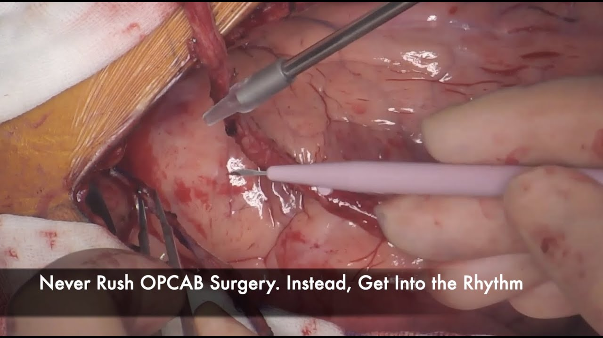
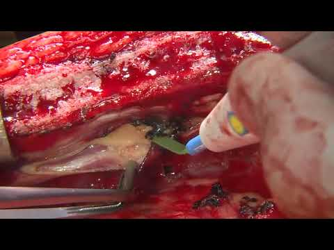
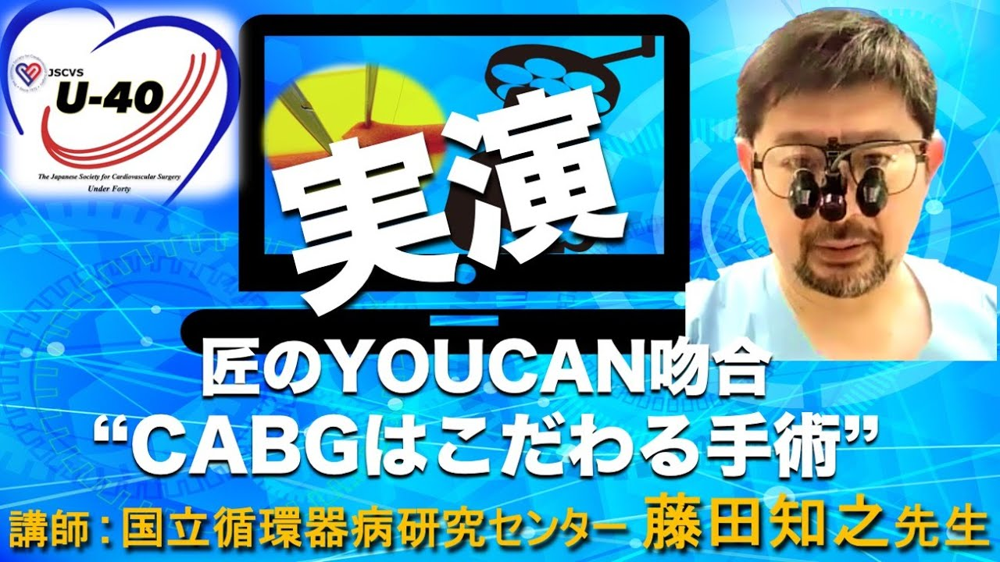

Off-Pump Beating Heart Surgery
Total Arterial Anaortic OPCAB を段階的に解説する手技ビデオシリーズ
開く冠動脈バイパス手術 — 学習リソース集
気になるカードをタップして、お手持ちのスマートフォンから各リソースを開いてください。手技ビデオ・ハンズオン・動画ライブラリを集めました。

Total Arterial Anaortic OPCAB を段階的に解説する手技ビデオシリーズ
開く
"not SLOPCAB but TOPCAB" — 高品質な全動脈グラフト OPCAB の実際
開く1,000本以上のエキスパート手技動画ライブラリ（要会員登録・ログイン）
開く
第2クール／国立循環器病研究センター 藤田知之先生による CABG ハンズオン
開く匠の外科医が実践＆解説する冠動脈吻合トレーニング（#2 月岡先生）
開く